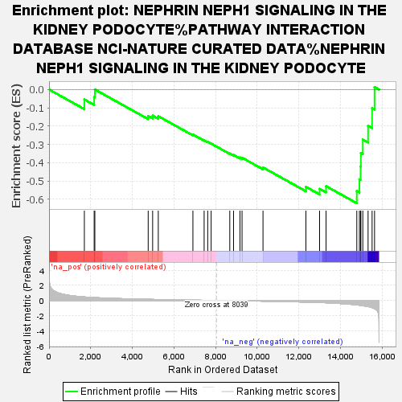
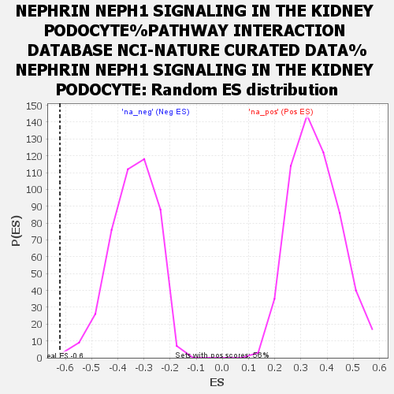

| | | Dataset | ranked |
| Phenotype | NoPhenotypeAvailable |
| Upregulated in class | na_neg |
| GeneSet | NEPHRIN NEPH1 SIGNALING IN THE KIDNEY PODOCYTE%PATHWAY INTERACTION DATABASE NCI-NATURE CURATED DATA%NEPHRIN NEPH1 SIGNALING IN THE KIDNEY PODOCYTE |
| Enrichment Score (ES) | -0.6212272 |
| Normalized Enrichment Score (NES) | -1.8256847 |
| Nominal p-value | 0.0022779044 |
| FDR q-value | 0.33575106 |
| FWER p-Value | 0.983 |
Table: GSEA Results Summary

Fig 1: Enrichment plot: NEPHRIN NEPH1 SIGNALING IN THE KIDNEY PODOCYTE%PATHWAY INTERACTION DATABASE NCI-NATURE CURATED DATA%NEPHRIN NEPH1 SIGNALING IN THE KIDNEY PODOCYTE
Profile of the Running ES Score & Positions of GeneSet Members on the Rank Ordered List
| SYMBOL | RANK IN GENE LIST | RANK METRIC SCORE | RUNNING ES | CORE ENRICHMENT | | 1 | PIK3R1 | 1697 | 0.464 | -0.0545 | No |
| 2 | TRPC6 | 2168 | 0.382 | -0.0408 | No |
| 3 | PRKCZ | 2201 | 0.378 | 0.0001 | No |
| 4 | ARRB2 | 4764 | 0.152 | -0.1445 | No |
| 5 | NPHS2 | 4978 | 0.137 | -0.1425 | No |
| 6 | GRB2 | 5249 | 0.122 | -0.1457 | No |
| 7 | PLCG1 | 6913 | 0.043 | -0.2458 | No |
| 8 | RAC1 | 7453 | 0.022 | -0.2773 | No |
| 9 | MAPK8 | 7624 | 0.016 | -0.2862 | No |
| 10 | PIK3CA | 7789 | 0.010 | -0.2955 | No |
| 11 | NCK1 | 8685 | -0.023 | -0.3494 | No |
| 12 | JUN | 8865 | -0.031 | -0.3572 | No |
| 13 | PRKCI | 9174 | -0.043 | -0.3717 | No |
| 14 | MAPK9 | 9274 | -0.047 | -0.3726 | No |
| 15 | MAP2K4 | 10281 | -0.091 | -0.4258 | No |
| 16 | AKT1 | 12342 | -0.214 | -0.5316 | No |
| 17 | CD2AP | 13000 | -0.269 | -0.5426 | No |
| 18 | MAPK10 | 13311 | -0.301 | -0.5280 | No |
| 19 | TJP1 | 14788 | -0.588 | -0.5545 | Yes |
| 20 | KIRREL1 | 14914 | -0.631 | -0.4907 | Yes |
| 21 | BAD | 14970 | -0.651 | -0.4204 | Yes |
| 22 | NPHS1 | 14983 | -0.657 | -0.3465 | Yes |
| 23 | FYN | 15077 | -0.695 | -0.2736 | Yes |
| 24 | PIK3CB | 15330 | -0.808 | -0.1978 | Yes |
| 25 | NCK2 | 15523 | -0.953 | -0.1018 | Yes |
| 26 | WASL | 15641 | -1.083 | 0.0137 | Yes |
Table: GSEA details [plain text format]

Fig 2: NEPHRIN NEPH1 SIGNALING IN THE KIDNEY PODOCYTE%PATHWAY INTERACTION DATABASE NCI-NATURE CURATED DATA%NEPHRIN NEPH1 SIGNALING IN THE KIDNEY PODOCYTE: Random ES distribution
Gene set null distribution of ES for NEPHRIN NEPH1 SIGNALING IN THE KIDNEY PODOCYTE%PATHWAY INTERACTION DATABASE NCI-NATURE CURATED DATA%NEPHRIN NEPH1 SIGNALING IN THE KIDNEY PODOCYTE